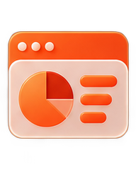

Maturidade
Em que estágio a IA está na organização: exploração, pilotos, uso recorrente ou operação integrada.
PESQUISA EM CURSO
Uma pesquisa para entender como está a maturidade e a entrega de valor com o uso de inteligência artificial nas empresas.
O OBJETIVO
Muitas empresas já testam ferramentas de inteligência artificial. A pergunta que queremos investigar é outra: o que realmente entrou em operação, o que gerou valor, o que decepcionou e quais obstáculos continuam entre o experimento e o resultado.
O índice nasce dessas conversas. A proposta é mapear ganhos, dificuldades, padrões de maturidade e caminhos práticos para que empresas possam se comparar e discutir soluções com mais contexto.
Não queremos medir apenas “quem usa IA”. Queremos entender como usa, onde funciona, quais obstáculos e que valor consegue produzir.
ESTRUTURA INICIAL
A metodologia será refinada conforme a pesquisa avança. A estrutura inicial observa quatro frentes complementares.
Em que estágio a IA está na organização: exploração, pilotos, uso recorrente ou operação integrada.
O que realmente saiu da demonstração e passou a fazer parte de produtos, processos ou rotinas.
Onde aparecem ganhos de tempo, qualidade, receita, produtividade, experiência ou capacidade.
Dados, governança, pessoas, processos, custo, integração e outros fatores que limitam adoção.
AS CONVERSAS
As entrevistas são curtas e orientadas para experiência real. Queremos ouvir líderes e profissionais que acompanham o uso de IA dentro das empresas e possam compartilhar aprendizados concretos.
Casos em que IA produziu resultado melhor do que o esperado.
Experimentos, projetos ou usos que decepcionaram, encontraram obstáculos ou criaram problemas.
Onde as empresas pretendem investir, integrar ou experimentar nos próximos meses.
QUEM PODE PARTICIPAR
Buscamos profissionais de Dados, Tecnologia, Produto, IA, Inovação, Operações, Marketing e Estratégia — além de fundadores e executivos que acompanhem diretamente a adoção de IA na empresa.
As empresas participantes poderão contribuir com casos, aprendizados e contexto. A intenção é que os resultados consolidados ajudem a criar um benchmark útil para quem está tomando decisões agora.
O QUE VOLTA
Além do retrato agregado do mercado, queremos transformar as entrevistas em comparações úteis: padrões de maturidade, caminhos de implementação, sinais de valor e barreiras recorrentes. O estudo não nasce para premiar quem fala mais de IA, mas para ajudar empresas a entender onde estão e o que pode fazer sentido testar a seguir.
Uma referência para comparar estágio, práticas e desafios sem reduzir tudo a uma única nota.

Dashboards e recortes para explorar os dados do levantamento de maneira intuitiva.
Aprendizados reais de quem tentou colocar IA para trabalhar dentro da operação.
PARTICIPE
Preencha os dados abaixo. O formulário abre uma mensagem pronta no seu aplicativo de e-mail para você enviar diretamente à equipe.
Site estático: ao enviar, abriremos seu aplicativo de e-mail com a mensagem preenchida.
CONTATO DIRETO
Lilian conduz a frente de entrevistas e inteligência de dados do estudo. Se quiser entender a pesquisa, sugerir uma empresa ou participar, pode falar direto com ela.